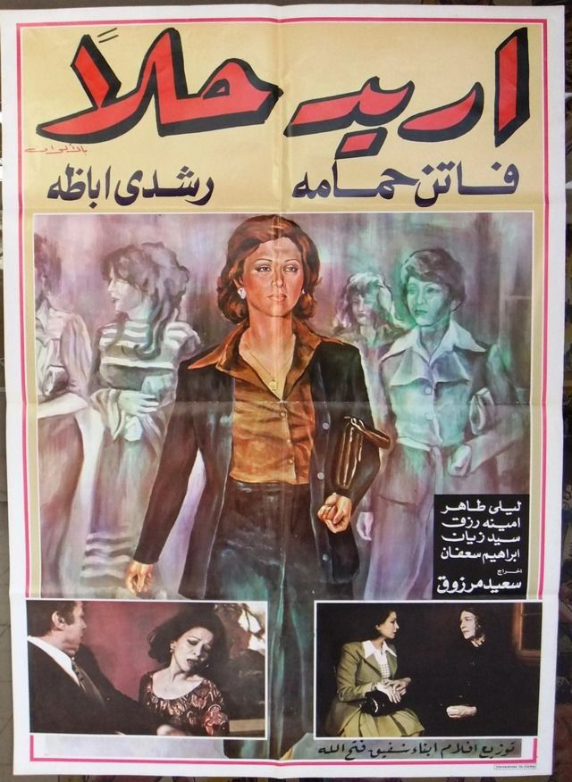

Said Marzouk's Uridu Hallan (I Want a Solution, 1975) starring Faten Hamama
It is really impossible for me to believe that something as self-evident and clear as someone's earnest desire to end their relationship with their partner could be subject to approval or disapproval by a third party, be it a court or otherwise. So watching Uridu Hallan (I Want a Solution, 1975) by Said Marzouk, starring Faten Hamama and Rushdy Abaza, is an exercise in suspending my judgement, common sense and gag reflex.
Inspired by a true story publicized by journalist Hosn Shah, the idea for the film was championed by Hamama, who approached Marzouk as the director and wrote it together with him. The result, produced by cinema polymath and erstwhile police officer, Salah Zulfikar, is a character-based drama about the desperate attempts of Doreya (Hamama) to divorce her cheating, drunk and abusive husband, Medhat (Rushdy Abaza) while navigating the complex and draconian legal codes of Egypt's then personal status laws, issued in 1920 and amended in 1929.
She made a series of films that decade reflecting her sense of social commitment, such as Afwah we Araneb (Mouths and Rabbits, 1977), in which she plays a poor rural woman forced to marry to support her family, and La Azaa lil Sayydat (No Consolation for Women, 1979), which also deals with society's tolerance of a tyrannical husband's behavior.
I Want a Solution was Marzouk's third feature film. He had already distinguished himself with his take on Othello, Zawgaty w al-Kalb (My Wife and the Dog, 1971), and Makan lil Hub (A Place for Love, 1972), a love story set in the aftermath of the 1967 war in Suez, and would go to direct two of his most memorable films, Al-Muthnibun (The Guilty, 1975) and Hikaya Wara kol Bab (A Take Behind Every Door, 1979), also starring Hamama, both of which were concerned with showing the injustices women face in a traditional, patriarchal society.
The film starts with Doreya requesting divorce, and through flashbacks we understand that her ultra-traditional family saw marriage as a social transaction to rid themselves off the potential threat of a daughter dishonoring them. They put forward Medhat, a former diplomat of aristocratic background who was laid off when Gamal Abdel Nasser came to power, and suppressed her objections to his character. But the husband's villainy knows no bounds — indeed, it's one of the most malicious roles of Rushdy Abaza's career: He openly cheats on his wife, physically and verbally abuses her, and makes it clear that he sees her as part of the furniture. When confronted by Doreya's wish for divorce, Medhat's indignity is not just that he is being rejected by something he owns — the fact that his wife might want another man damages his sense of patriarchal control and domination.
As the law forbids a wife to request divorce except for very specific, mostly humiliating reasons, such as a husband's sexual inadequacy, perversity or lack of economic support, and as Doreya does not want to splash her personal life in front of an entire courthouse, she simple reasons that she can no longer stand living with her husband, and believes that should be reason enough for her to be granted a divorce by the court.
Her insistence on ignoring the postulates of the law results in her case dragging on for years in Egypt's congested legal system, but her husband is not the least bit affected by this open legal battle, and goes on living his life as he always did.
The craning shots in the labyrinthine courthouse — which Marzouk shot on location — are one of the most technically remarkable features of the film, with the director spending weeks in courthouses observing real cases of divorce and alimony. In many instances we feel that Doreya is an extension of the camera, of Marzouk himself gazing unto the miseries unfolding in court: Women battered and abused, some suing for alimony, some divorced and kicked out onto the street. A particularly heartbreaking example in the film is Amina Rizq's famous cameo, where her husband divorces her and refuses to pay alimony. The camera snakes its way through the court's gloomy hallways, descending and ascending its spiral stairs, mirroring an architecture designed to dehumanize and oppress, as if Doreya is trapped in the serpentine halls and their unforgiving legal codes and procedures. Every time she steps into the courthouse, that vertiginous sense of helplessness overwhelms the screen, visually and psychologically.
Doreya's brother, an aspiring artist, is bland and gives bizarrely little reaction to his sister's plight. Her friends are frivolous and monotonous. The only other memorable characters are the minor characters that inhabit the netherworld of the courthouse, and indeed Marzouk is very sensitive in capturing moments where women are exploited or abused. He would have done well to expand on that ability to capture fleeting human suffering rather than give Doreya a backstory that takes over the entire film, which falters in contrast to the urgency of her own plight and that of others women living under such laws.
To his and Hamama's credit, the film did rouse a lot interest, and is considered one of the few films to influence Egypt's rigid, unyielding laws. Anwar Sadat's wife, Jehan al-Sadat — who had already proved politically ambitious and pushed for a state-sponsored agenda for law reform — is said to have been moved by the film, adopting the cause of amending the law and pushing for her husband to ratify the amendments while the Parliament was in recession in 1979. The personal status law, which became known as Jehan's Law, added articles stipulating the wife's right to divorce in the event that both sides fail to prove the other's culpability. It was struck down as unconstitutional in 1985, because the president had not presented the law to Parliament after it reconvened its sessions, and replaced by the very similar Law 100/1985. Jehan's law was effectively a precursor to the 2000 khula law, which is still in effect today and grants women the right to demand a "no-fault" divorce, provided they forfeit their right to their alimony and dowry.